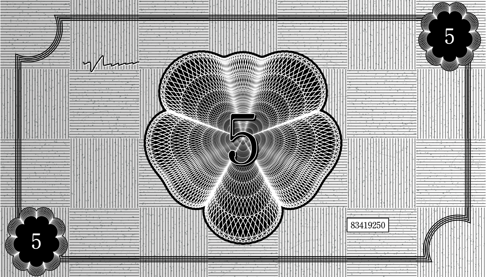
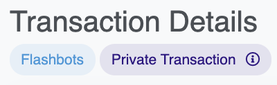

Compromised
10/18/2021I did something incredibly fucking stupid last Thursday: I accidentally compromised my hot wallet. This led to an immediate loss of thousands of dollars in liquid assets and the eventual loss of some awesome NFTs. In addition, several irreplaceable NFTs (like the steviep.eth ENS entry and my avatar NFT) became locked on that wallet. Making matters worse, ownership over the FastCashMoneyPlus.biz contract, the IOU contract, the CryptoGodKing art blocks project, and the Subway Jesus Pamphlets OpenSea project were all tied to that wallet. It was only a matter of time before the blockchain vultures knew what they had. What follows is a story of intrigue, peril, and crypto espionage.
Postmortem
On Thursday night I was preparing to deploy a new contract. As with a previous project I planned to host the assets on gh-pages, so I pushed my code to a public github repo. Some healthy paranoia got the better of me as I thought through the logistics of my test deployment to rinkby. I took another look at my code, which unfortunately confirmed my paranoia. I'd just willingly committed my private key and exposed it to the internet 🤦♂️. I immediately deleted the repo and thought maybe it wouldn't be that bad. It had only been up for five minutes, so maybe transfering all my assets to another wallet would be an overreaction. But when I opened metamask to check my balance I saw it quickly shift to 0. All the ETH and USDC in that wallet was gone. I normally think putting memes in blog posts is tacky. But fuck it, here it goes:

It was pretty surreal to experience what I'm sure everyone in the crypto space fears. Aside from the sinking feeling in my gut I felt incredibly stupid. As a (formerly) professional software engineer I really should have known better. In fact, I did know better, and I proceeded to make multiple stupid decisions out of laziness. So for the benefit of others, let's briefly analyze my stupidity. Feel free to skip this section and take my word for it that I'm very stupid. But otherwise, here is a list of stupid things I did in descending order from most stupid to least stupid:
- I used a wallet containing anything of any value for development. There's really no excuse for this. Mistakes happen all the time, and it's completely reasonable for any of the other stupid things on this list to happen. ALWAYS USE A DEVELOPMENT WALLET FOR ANYTHING AUTOMATED. You can always transfer contract ownership to a different wallet. There's really no reason to ever use the private key for a wallet you care about.
-
I let the assets of my hot wallet get a little out of control. Hot wallets are convenient, and I fully support keeping a bit of ETH and some of your NFTs in them for easy access. But you really shouldn't store anything in them that you wouldn't mind losing. Storing tens of thousands of dollars in your web browser is not a good idea. I'll at least pat myself on the back for keeping big ticket NFTs and the majority of my funds in my hardware wallet.
Don't worry, baby. You're safe.If you're active in the NFT of DeFi space, it's probably good practice to rebalance your wallets on some regular cadence.
- I assumed a .gitignore file would be sufficient to protect my secrets. The extent of my thinking was more or less the first bullet point of this consensys article. As I explain below, this is not good enough if you have multiple projects.
-
This is probably the most impactful, but also the most understandable bit of stupidity: I copied files into my new repo by doing
cp -r ./old-repo/* ./new-repo, which ignores hidden files (like .gitignore). Oops. - I put all my contracts and development tools in a public repo. I'm not actually convinced that this is particularly stupid, but keeping this in a private repo would have added some extra buffer for my stupidity.
Damage Control
Okay, enough preaching. In the course of five minutes I'd broadcasted my private key to the entire internet, had my wallet wiped clean of liquid assets, and thoroughly reflected on how stupid I was. After yelling loudly at no one in particular I shifted to damage control mode. All my NFTs were still in the wallet, but I had no gas to send them to a different wallet. I tried sending a little ETH to the compromised wallet as a test, but my ledger decided it was a good time to mysteriously yell ledger device is busy (lock getaddress) whenever I tried to make a transaction. I noticed a 0.1 ETH deposit into the wallet, but that was followed by a transfer of my Roboto and a large Uniswap LP token. A few minutes later there was another deposit-withdrawal combo. This time the withdrawal was more sizable.
With my NFTs vanishing and my ledger on the fritz I strategized with my friend and business advisor dreamworld about how to quickly extract my tokens. First we figured that I could gaslessly list them for 0 ETH on OpenSea, but we were worried that bots would snag them before we could pick them up. We ultimately decided to list them for 0 ETH in private sales. This led to a lot of really confusing sales bot messages in the art blocks #block-talk discord channel, but we were able to recover 17 IOUs, Tomorrow People #17, Generative Mask #4507, BillionDollarDapp Pixel #27, Strata #99, and eight artblock pieces. Frankly, I'm a little offended that the crypto vultures didn't want any of my CryptoGodKings, but I'm very happy I was able to rescue my avatar token. I view this as nothing short of an act of CryptoGodKing.
Some of my other NFTs weren't so lucky. I lost Generative Mask #4297, Exterior # 138, two Lazlo Lissitsky pieces, and eight art blocks pieces (including Fake Internet Money #208 and four I Saw It in a Dream pieces). A Mooncat Rescue slipped under the radar, but was taken the next day before I could rescue it a second time. Whoever this vulture is, I have to hand it to them. They have good taste.
Thankfully I was also able to contact art blocks and OpenSea, who were able to transfer ownership of my projects to my hardware wallet. As much as I'd like my royalties and project ownership to be ironclad and locked into the smart contracts, centralization and individual discretion has its perks sometimes.
Finally, I marked my account as compromised and changed the profile such that its status is clear.
Entering the Dark Forest
Ethereum is a dark forest. I just learned a very expensive lesson that the second you make a sound in this dark forest you're fucked. I like to think that there are millions of people around the world with no life who are closely monitoring my internet activity, waiting to gobble up any free money I happen to drop. But the reality is that a lot of smart people have spent countless hours building robots to automate this for them. I can't even be mad at bad actors for taking my money. At this point it's a pure force of nature.
So, now what? I did all I could with gasless transactions, but my primary ENS entry (steviep.eth) was stuck, along with several less-liquid NFTs that I valued highly on a personal level. Additionally, the ownership of several contracts was tied to that wallet. Ownership over the FastCash contract alone gives one control over billions of dollars in wealth, and the owner of the IOU contract has the ability to revoke ownership of any token in the collection. This was bad.
I made a small test transaction by sending the compromised wallet a little bit of ETH. Seconds later it was siphoned off. I looked through some of the botted transactions and noticed something.
I didn't know much about flashbots, but I knew enough to realize that bots weren't just wiping my wallet immediately -- they were doing it within the same block. My wallet had turned into a war zone. I realized there was no way I could compete with that by manually running transactions. I needed a way to fund the wallet and conduct my business without anyone getting in the middle. I didn't have much of a choice: I had to build my own flashbot. Unfortunately I had no idea how to build my own flashbot.
"What is a flashbot?" you might ask. Flashbots is a system designed to combat transaction front running. Normally when you submit a transaction on the Ethereum network it goes into the mempool. When miners mine a block they typically choose to include the most lucrative transactions available. But these transactions are all public while they're pending, which means that certain actors can analyze them and front run in an automated fashion. However, Flashbots relayers can submit transactions directly to miners on a block-by-block basis, so they never enter the mempool. And more importantly, this allows one to bundle a group of transactions so they all take place in the same block.
After asking around I came across a few good resources and people willing to answer my plethora of questions. Of note, this youtube video and its associated github repo were excellent starting points. Over the course of the next two days I was able to put together the pieces to build my own flashbots script. Then on Saturday evening I ran three bundles to more or less retrieve everything that was left. I was able to reclaim ownership of the FastCashMoneyPlus contract, the IOU contract, the steviep.eth ENS domain, my deafbeef fastcash First First, my 2007 Kia Sedona, my Enchiridion prototype, my rare Buddha Matt stickers, and my chicken.
You can view the actual code I used to recover my NFTs and contracts on this github repo, which thankfully doesn't contain any of my private keys.
There are still a few pieces sitting in limbo, but one day I'll return to the forest to retrieve them.
Final Thoughts
As stressful as this whole experience was, it was also fascinating. I'm not sure if this is at all rational, but in many ways the sense of violation and helplessness I felt on Thursday was matched by the excitement and empowerment I felt at being able to recover my remaining assets. It really emphasized the wild west nature of the crypto landscape at the moment, and will ensure that I never take my security for granted again. It makes me wonder whether web3 will seriously enter the mainstream, or if it will remain a semi-niche. Overall, I can't be too upset about how things unfolded. I've been incredibly lucky to endup where I am today, so running into the occasional bit of bad luck feels more like the cost of doing business.
I also wonder how this will affect the future market value of all the NFTs involved in this whole ordeal. I'd like to think that my Buddha Matt stickers will be worth millions of dollars because of the added Louvre heist-style flair that it's gained. And I wonder what sort of life Fake Internet Money #208 will have. Maybe one day it will end up back in my possession. And if not, then maybe someone else will be able to appreciate its journey. NFTs are supposedly forever, and forever is a long time. Or maybe the crypto vulture who took it forgot the key for the wallet it's now on, and it's effectively burnt. Either way, it's fun to think about.
Meanwhile, it appears as it it's time to close the book on my old friend, 0x7C23C1b7e544e3e805bA675c811E287fc9d71949. Since its first transaction on January 15, 2018, up until last week, it remained a faithful companion and acted as a source of stability in these turbulent crypto markets. Even though it will likely outlive me, it appears as though we must now part ways. I look forward to seeing what stories and transactions await it between now and the end of eternity.